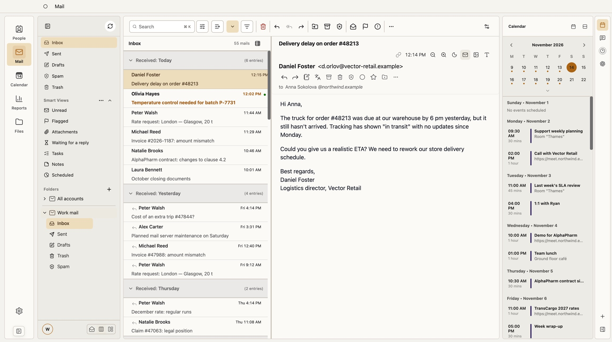

Outlook alternative for Mac that still works with Exchange
If you left Outlook on Mac because it is slow, or because Microsoft keeps changing it, but your company still runs Exchange, the choice is narrower than it looks. Apple Mail and Thunderbird can read Exchange mail, but calendar, shared mailboxes and server-side rules are where they usually fall short. This page lists what to check, and where Jackdaw Mail (the app I build) fits. Disclosure up front: I am its author.
What to check in any Outlook replacement
- Protocol. Does it speak EWS, OWA or ActiveSync, or only IMAP? On-premises Exchange often has IMAP turned off.
- Calendar and meetings. Invitations, free/busy, room booking, not just mail.
- Shared mailboxes. Opening them and sending as the shared address.
- Server features. Out-of-office replies, server-side rules, tasks, notes.
- Where your mail goes. Direct to your server, or through a vendor cloud.
What Jackdaw Mail does
- Connects to Exchange over OWA, EWS and ActiveSync; also IMAP, CalDAV and CardDAV.
- New mail arrives immediately via Exchange push notifications.
- Shared mailboxes, send-as, out-of-office, server rules, tasks, notes, room booking.
- Reply time measured in working minutes, an unanswered queue, and reports (Pro).
- Mail goes straight from your computer to your server. Our servers do not see your messages.
- Open-source client (EUPL-1.2), macOS 12+ and Windows 10/11, 43 interface languages.

Limits you should know
- Microsoft is retiring EWS for Exchange Online (Microsoft 365). Jackdaw Mail is aimed at on-premises Exchange and OWA; Microsoft 365 support is not complete.
- Builds are not signed by Apple or Microsoft. macOS and Windows SmartScreen warn on first launch; the code is open and builds come from public GitHub Actions.
- No Linux build yet.
Price
Free for one mailbox. Pro is $9.99 per month or $79.99 per year per seat, with a 7-day trial and no card required.